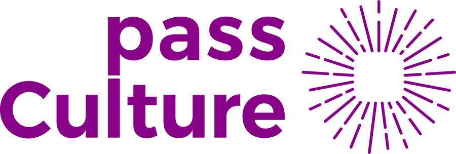
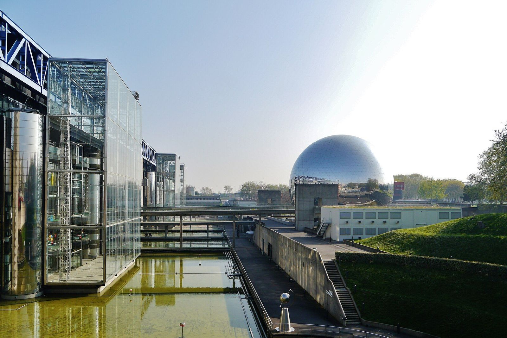
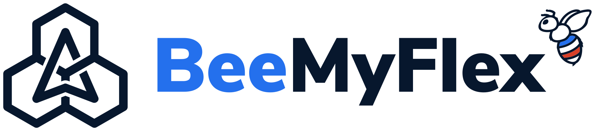
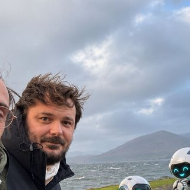
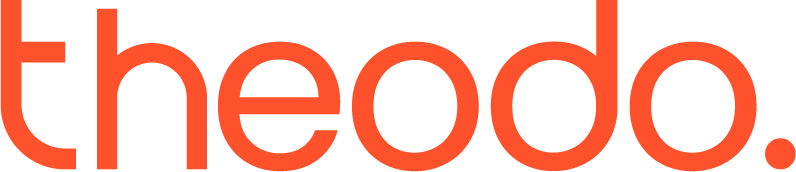
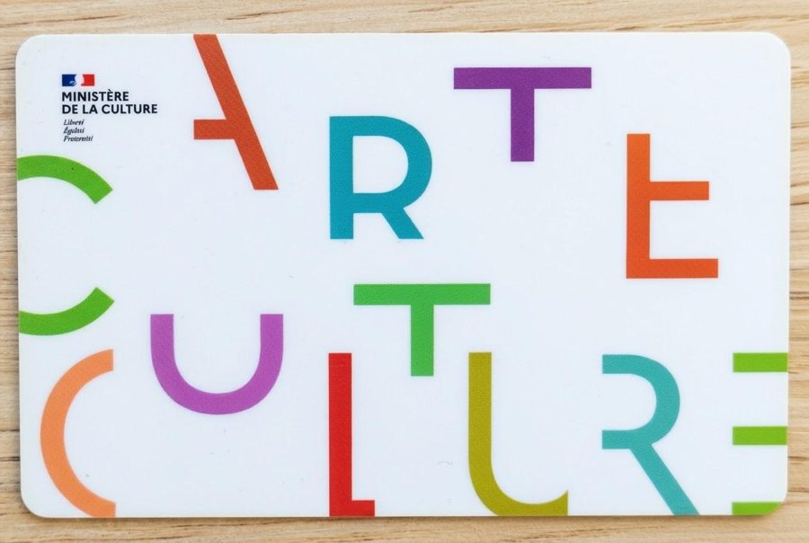
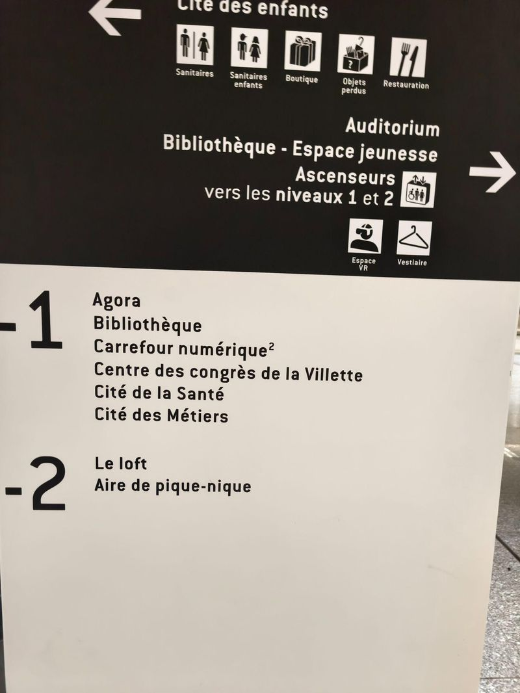
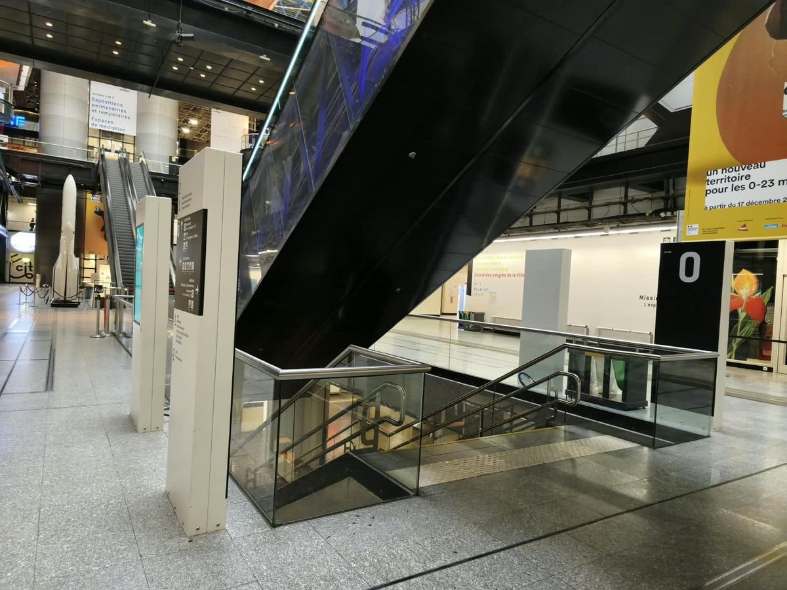
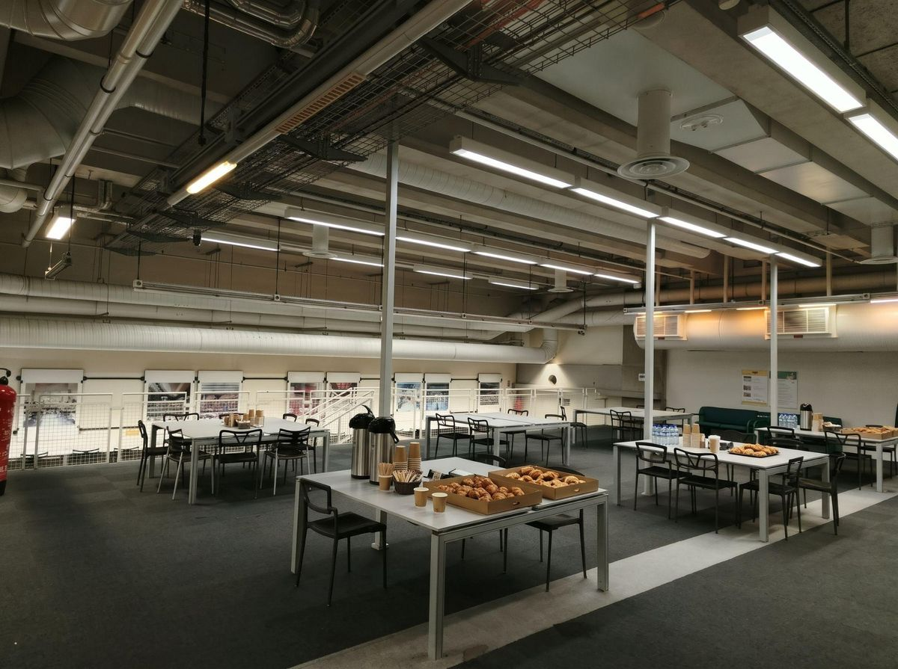

9h45 – 10h00

Lancement de la journée — Trajectoire IA pass Culture
Thomas Dugué
CPO
Nicolas Durand
CTO
L'IA dans la tech et le produit — retours d'expériences.

Programme
9h15 – 12h45
9h15 – 9h45
Accueil · café
9h45 – 10h00

Thomas Dugué
CPO
Nicolas Durand
CTO
10h00 – 10h35
Vincent Fratarolli
CEO & Co-founder
10h40 – 11h15


Gabriel Rassial & Xavier De Koninck
Co-fondateurs
11h15 – 11h30
Pause · café
11h30 – 12h05

Roxane Albert
Group Product Manager, AI for product
12h10 – 12h45
Livia Fries
Solutions Architect, IA dans l'État
Luis Arias
CTO ALLiaNCE
12h45 – 14h10
Déjeuner
Salle Pique-nique 2, à l'étage -1
14h15 – 18h00
14h15 – 14h50
Arthur Micoulet
Co-Founder
14h55 – 15h30
Valentin Shamsnejad
Ingénieur produit, Data.gouv
15h35 – 16h10
Thomas Dugué
CPO
Nicolas Durand
CTO
16h10 – 18h00
Visite libre de la Cité des sciences
1 carte culture = 2 entrées
Avant de venir

Elle donne accès à la visite libre de la Cité des sciences : 1 carte = 2 entrées. Faites-en profiter nos invités et les malters.
Vos machines ne sont pas nécessaires : la journée est faite de talks et d'échanges.
Vous la trouverez dans l'événement du séminaire, dans votre agenda.
Accès
Cité des sciences et de l'industrie
30 avenue Corentin-Cariou, 75019 Paris
Métro 7 · Porte de la Villette

Depuis l'entrée principale, suivez « Bibliothèque ».

Descendez au niveau -1, puis dans la bibliothèque suivez le panneau « Salle Pain-Levé ».

Coffee time ! L'accueil commence à 9h15.
Après les talks